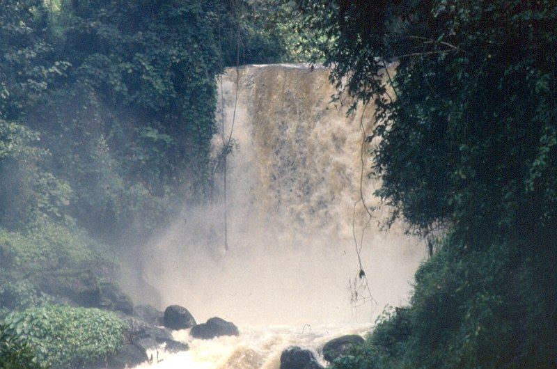
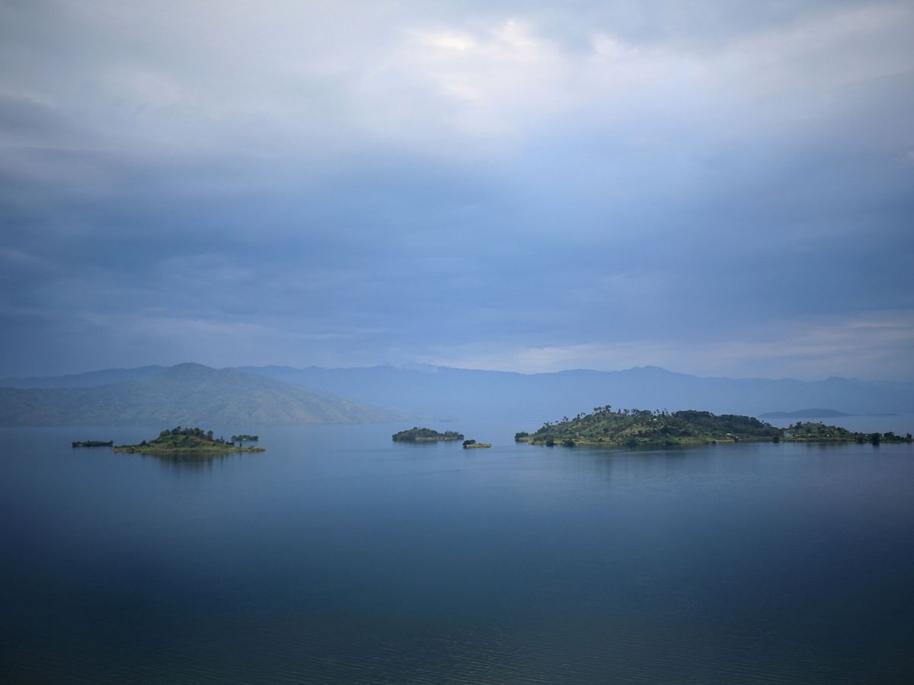
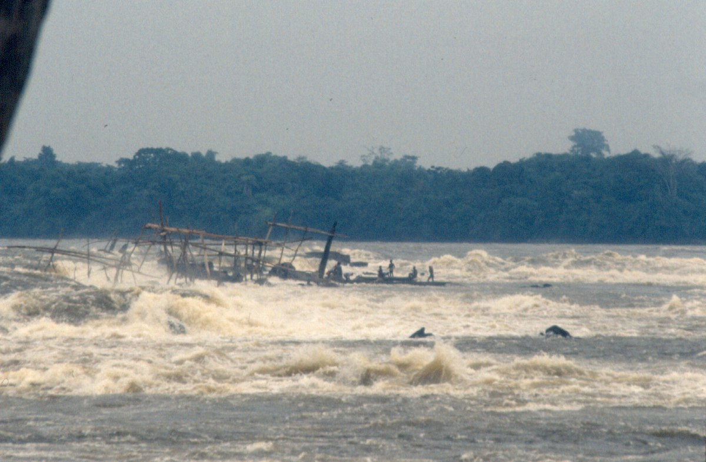
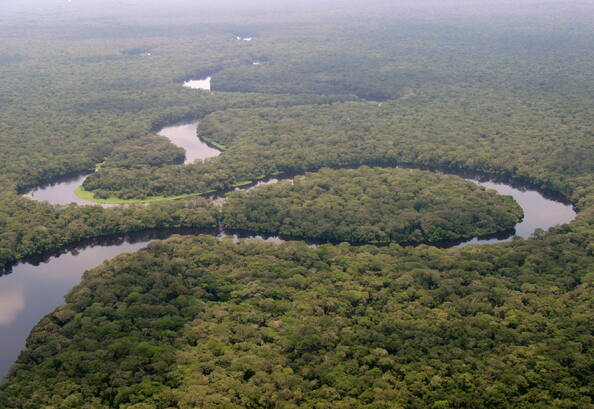
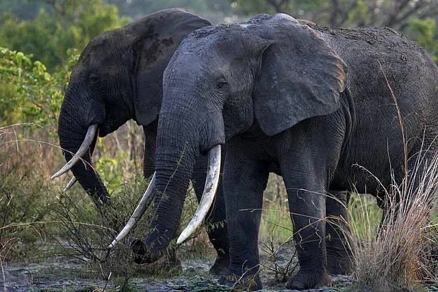
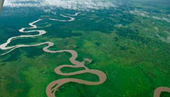
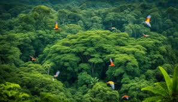
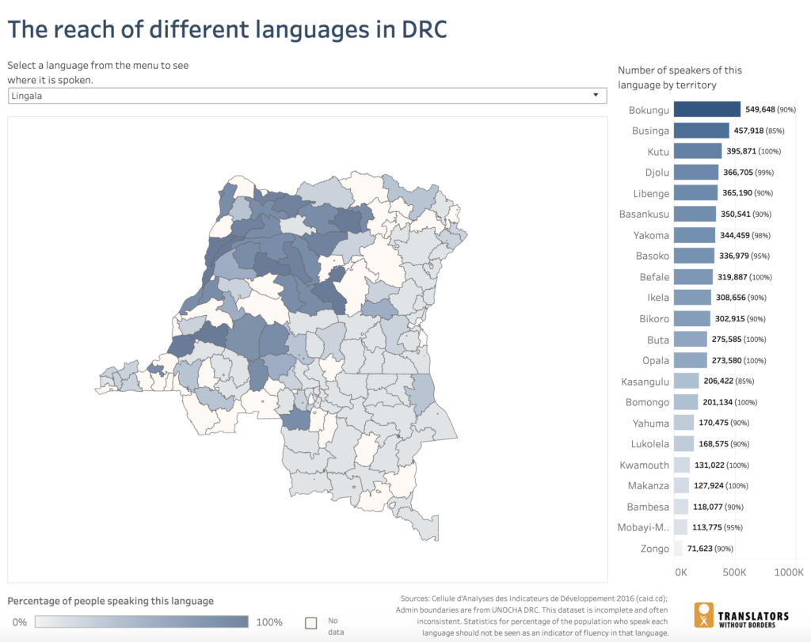

Descripcion del pais
La República Democrática del Congo (RDC) es el segundo país más grande de África y uno de los más biodiversos del mundo. Su capital es Kinshasa, una ciudad vibrante situada a orillas del río Congo, que también sirve como una frontera natural con la República del Congo. El país es conocido por su vasto territorio cubierto por selvas tropicales, montañas y ríos, incluidos el río Congo, el segundo más largo de África. La RDC es rica en recursos naturales, incluidos minerales como el cobalto y el cobre, que son vitales para la economía global. Sin embargo, la nación ha enfrentado desafíos significativos, incluyendo conflictos armados y problemas de gobernanza. La RDC es también hogar de una diversidad cultural impresionante, con más de 200 grupos étnicos y numerosas lenguas.
5 lugares para ir de vacaciones
1. Parque Nacional de Virunga
El Parque Nacional de Virunga es el parque nacional más antiguo de África, famoso por su impresionante biodiversidad y como hogar de los gorilas de montaña. Situado en la región oriental de la RDC, ofrece la oportunidad de realizar safaris, senderismo en volcanes activos como el Nyiragongo, y observación de aves. Los viajeros también pueden visitar los lagos de lava y explorar la exuberante vegetación que caracteriza la región.
2. Lago Kivu
El Lago Kivu, situado en la frontera entre la RDC y Ruanda, es uno de los Grandes Lagos de África. Es un destino popular para quienes buscan relajarse en playas pintorescas, disfrutar de deportes acuáticos o explorar las islas del lago. Las ciudades costeras de Goma y Bukavu ofrecen una mezcla de belleza natural y cultura local, con mercados vibrantes y gastronomía regional.
3. Cataratas de Boyoma
Las Cataratas de Boyoma, también conocidas como Cataratas de Stanley, están ubicadas cerca de la ciudad de Kisangani en el río Lualaba. Son una serie de siete rápidos que se extienden a lo largo de más de 100 kilómetros, creando una de las vistas más espectaculares del país. Es un sitio ideal para los amantes de la naturaleza y aquellos interesados en la historia de las exploraciones africanas.
4. Parque Nacional de Salonga
El Parque Nacional de Salonga es la mayor reserva de selva tropical de África y Patrimonio de la Humanidad por la UNESCO. Está ubicado en el corazón de la cuenca del Congo y es hogar de especies raras como los bonobos, cocodrilos y elefantes de bosque. Debido a su aislamiento, es un destino para aventureros que buscan experimentar la naturaleza virgen y la vida salvaje en su estado más puro.
5. Parque Nacional de Garamba
El Parque Nacional de Garamba, situado en el noreste de la RDC, es conocido por su paisaje de sabanas y por ser uno de los últimos refugios del rinoceronte blanco del norte. También alberga elefantes, jirafas, y leones, y es un lugar donde los turistas pueden participar en safaris y observación de vida silvestre. Garamba ofrece una experiencia única para los amantes de la fauna africana en un entorno menos concurrido que otros destinos más conocidos.
Datos curiosos
1. El Río Congo y su Profundidad
El río Congo es el segundo más largo de África, después del Nilo, y el segundo más caudaloso del mundo, después del Amazonas. También es el río más profundo del mundo, con algunas partes que alcanzan más de 220 metros de profundidad.
2. Biodiversidad Única
La RDC alberga algunas de las especies más emblemáticas y en peligro de extinción del mundo, como los gorilas de montaña, los bonobos y los okapis. El Parque Nacional de Virunga, en el este del país, es uno de los lugares más importantes para la conservación de la fauna en África.
3. Diversidad Lingüística
En la RDC se hablan más de 200 idiomas y dialectos. Las cuatro lenguas nacionales más habladas son el lingala, el swahili, el kikongo y el tshiluba, mientras que el francés es el idioma oficial del país.
Quiz
¡Prueba tus conocimientos con este Quiz!
Gracias por participar
Tu puntaje fue: